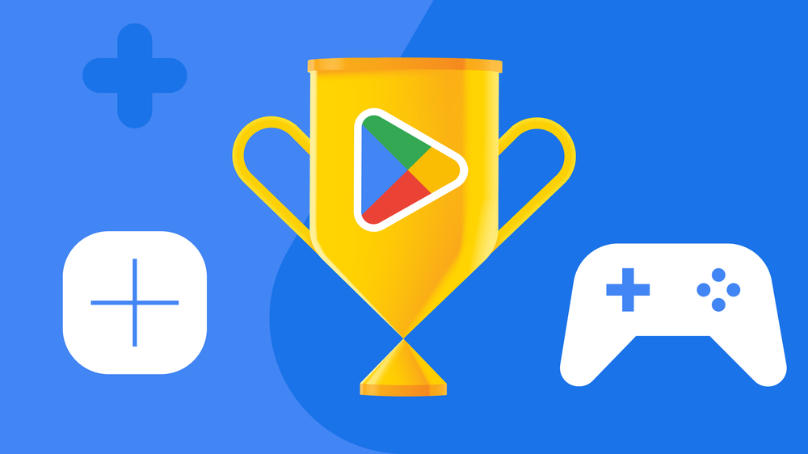

Os melhores jogos do Google Play em 2022

Os vencedores concorrem aos prêmios de Melhores de 2022 do Google Play.
Todos os anos, reconhecemos os melhores aplicativos e jogos no Google Play e os desenvolvedores que os trazem à vida. Suas ideias ousadas e criatividade nos ajudam a alcançar pessoas em todos os tipos de dispositivos, de telefones e relógios a Chromebooks e tablets.
Aplicativos e jogos, e a forma como os usamos, estão sempre mudando. Então, este ano, adicionamos um novo prêmio para os melhores aplicativos e jogos para Chromebooks para celebrar o excelente trabalho dos desenvolvedores em uma das maiores telas que você pode acessar no Google Play. Nossas outras novas categorias capturam os diversos gêneros de jogos atuais, incluindo o melhor jogo de história, o melhor jogo em andamento (por exemplo, serviço ao vivo) e o melhor jogo disponível no Play Pass.
E, como todos os anos, os vencedores de 2022 refletem o que é mais importante para as pessoas no momento — desde jogos que nos ajudam a escapar da realidade e entrar em um mundo totalmente novo até aplicativos que nos ajudam a manter os pés no chão e o presente.